Entorno JavaFX
Tenemos que configurar el entorno JavaFX en el sistema para ejecutar aplicaciones JavaFX. Todas las versiones de Java posteriores a JDK 1.8 son compatibles con JavaFX, por lo que debemos tener instalado JDK 1.8 o posterior en nuestro sistema. Hay varios IDE, como Net-beans o Eclipse, que también son compatibles con la biblioteca JavaFX.
Concretamente la última versión disponible ahora es JDK 19.
JavaFX y NetBeans
Vamos a ver cómo crear una aplicación JavaFX en NetBeans. Se utilizaron JavaFX 19, JDK 19 y Apache NetBeans 15 para las capturas de pantalla del IDE.
A estas alturas del curso ya tendremos instalado:
- Apache Netbeans 15 o posterior
- JDK 19
Instalar el plugin JavaFX2
- JavaFX 2.0 is the next step in the evolution of Java as a rich client platform. It is designed to provide a lightweight, hardware-accelerated Java UI platform for enterprise and business applications.JavaFX 2 Scene Builder
- JavaFX2 Scene Builder support in the form of simple external launcherModules installed:
JavaFX 2 Scene Builder, JavaFX 2 Support
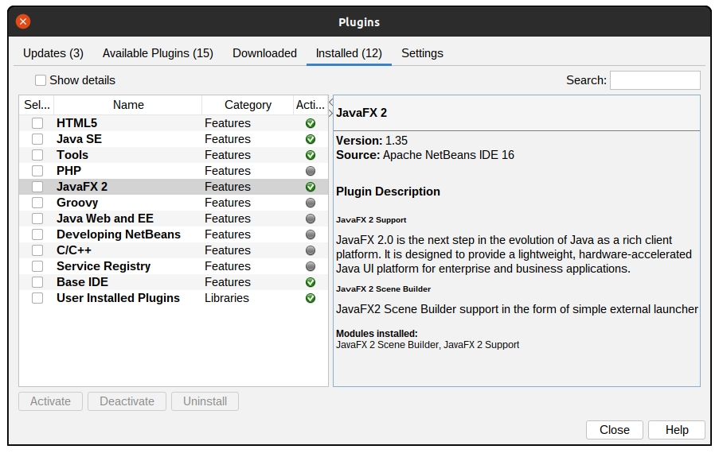
IMPORTANTE: es necesario reiniciar el IDE, en windows fué necesario.
Proyectos JavaFX con netbeans IDE
Sigue estos pasos para crear un proyecto JavaFX utilizando las herramientas IDE para compilarlo y ejecutarlo.
- Descargar el SDK de JavaFX apropiado para su sistema operativo.
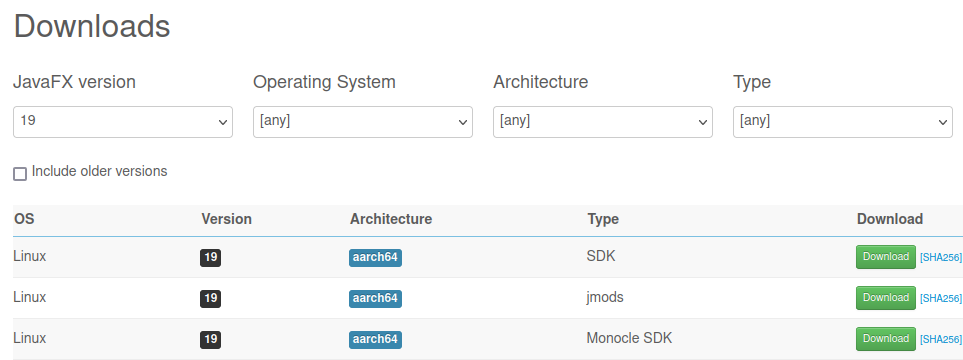
- Descomprímelo en la ubicación deseada, por ejemplo, /Users/your-user/Downloads/javafx-sdk-19. Es IMPORTANTÍSIMO que recuerdes la ruta (path) hasta esta librería, el lugar donde lo descomprimas no es importante.
-
Crea una nueva biblioteca global en:
- Tools -> Libraries -> New Library (abajo a la izquierda)
- Nómbrala JavaFX (por ejemplo), debes añadir Add JAR/Folder los archivos jar en la carpeta lib de JavaFX 19.
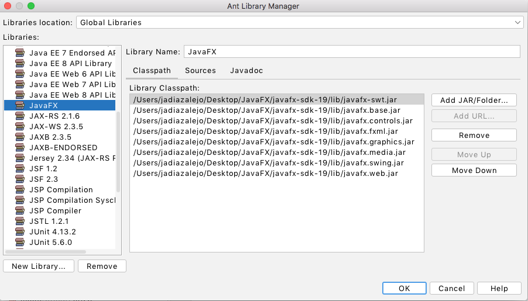
Nota importante: asegúrate de no añadir el archivo src.zip, ya que provocará una excepción al ejecutar el proyecto.
-
Crea un proyecto de Java (JavaApplication NO JavaFX):
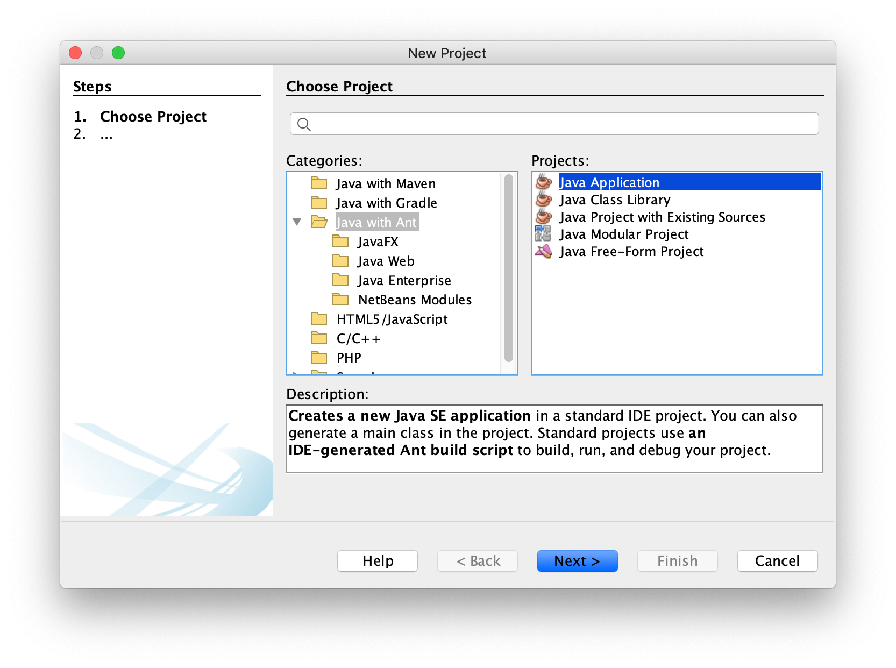Proporciona un nombre para el proyecto, como HelloFX, y una ubicación. Se abrirá un proyecto predeterminado.
IMPORTANTE.
Advertencia: no intentes crear un proyecto JavaFX. Las tareas JavaFX Ant de la versión actual de Apache NetBeans aún no están listas para JavaFX 19, a menos que tenga un JDK personalizado que incluya JavaFX.
-
Establecer JDK
Asegúrate de que Tu proyecto esté configurado para ejecutarse con JDK 17 o posterior. Abrimos las propiedades del proyecto (botón derecho sobre el nombre del proyecto) y properties
-
Properties -> Libraries -> (campo) Java Platform y configúralo en tu JDK preferido.
-
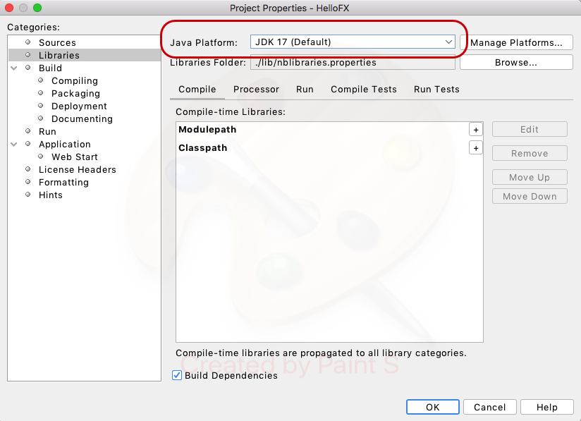
-
Configurar el proyecto.
-
Añadir la biblioteca
Iremos a Properties -> Libraries -> Classpath -> + -> Add Library y añadimos la biblioteca JavaFX.
-
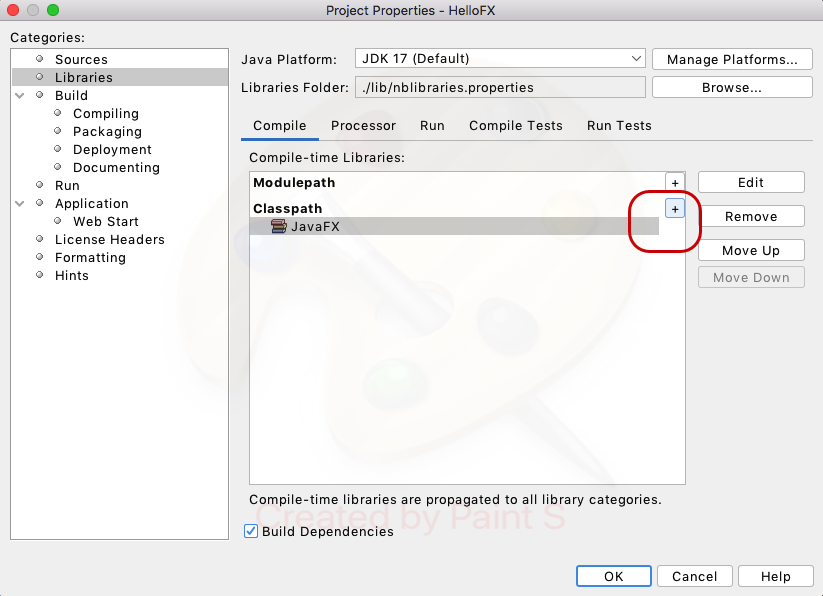
- Ir a Properties -> Build -> Compiling: asegurarse de anular la selección de la opción Compile on Save.
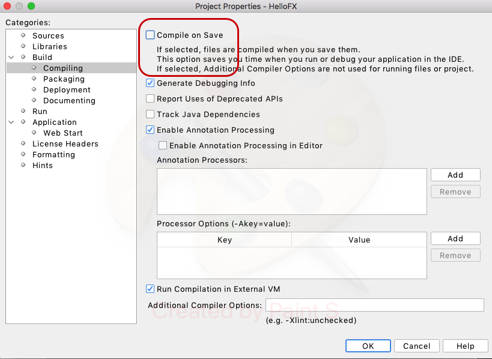
Mi primer proyecto JavaFX.
Vamos comenzar
- Heredando la clase principal de la clase Application
- Tendremos que importar las clases de la librería (no confundas con otras clases: es javafx.application.Application
- Implementar el método abstracto strat(Stage stage)
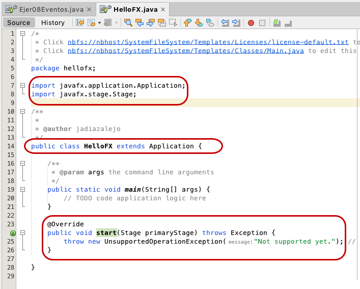
-
Agregar clases JavaFX
Para trabajar con el modelo MVC, tenemos que añadir un archivo FXML con su controlador y una hoja de estilo.
Botón derecho sobre el Package -> new -> Other -> JavaFX ->Empty FXML
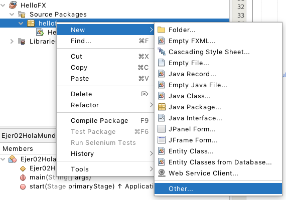
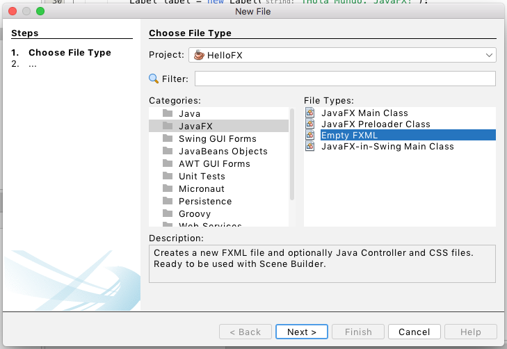
Le ponemos un nombre a la Vista (fichero FXML)
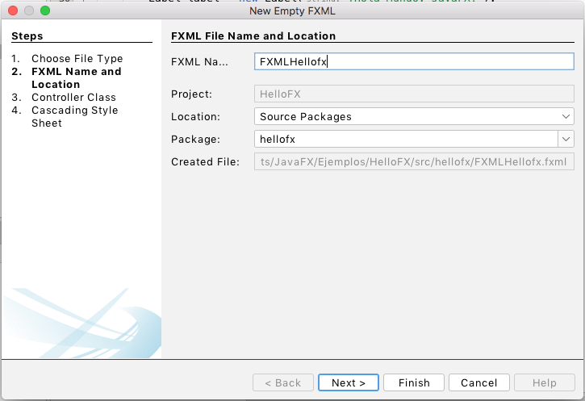
Le indicamos que queremos utilizar Use Java Controller
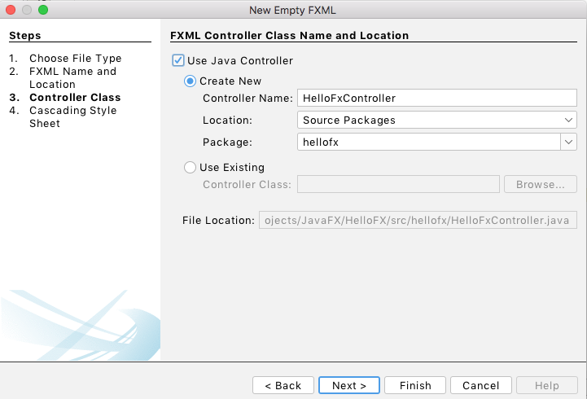
Y queremos utilizar un CSS
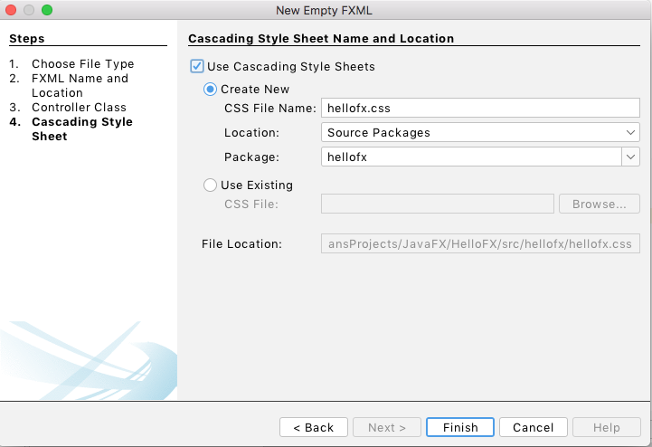
Tendremos un proyecto con las siguientes clases:
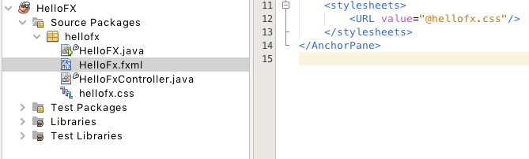
Advertencia: si ejecuta ahora el proyecto, se compilará pero obtendrá este error:
Error: JavaFX runtime components are missing, and are required to run this application
Este error se muestra porque Java 19 verifica si la clase principal extiende de javafx.application.Application. Si ese es el caso, es necesario tener el módulo javafx.graphics en la ruta del módulo.
SOLUCIÓN: Add VM options
Para resolver el problema, Ir a Properties -> Run del proyecto y añadir estas opciones en el campo VM:
- Para Linux y Mac: --module-path /path/to/javafx-sdk-19/lib --add-modules javafx.controls,javafx.fxml
- Para Windows: --module-path "\path\to\javafx-sdk-19\lib" --add-modules javafx.controls,javafx.fxml
Donde /path/to debes sustituirlo por tu ruta a la librería, por ejemplo:
--module-path /home/adminroot/Escritorio/JavaFX/javafx-sdk-19/lib/ --add-modules javafx.controls,javafx.fxml
IMPORTANTE: un espacio en blanco al final hará que el error continue.
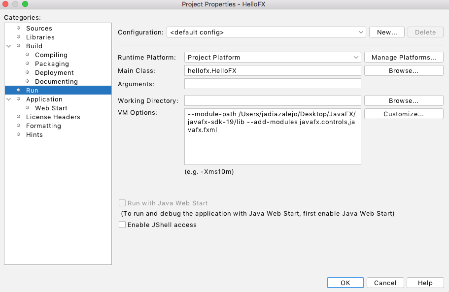
Haz clic en aplicar y cierra el cuadro de diálogo.
Ejecutar el proyecto
- Haz clic en Run -> Run Project (HelloFX) para ejecutar el proyecto, ya no debe darnos ningún error. Aunque el proyecto no haga nada por el momento.